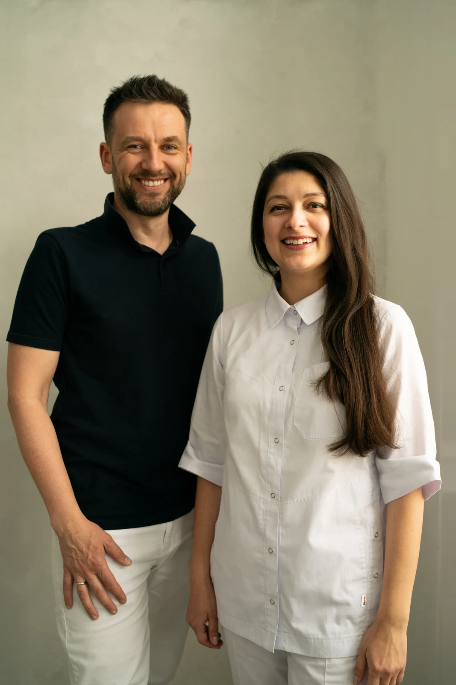
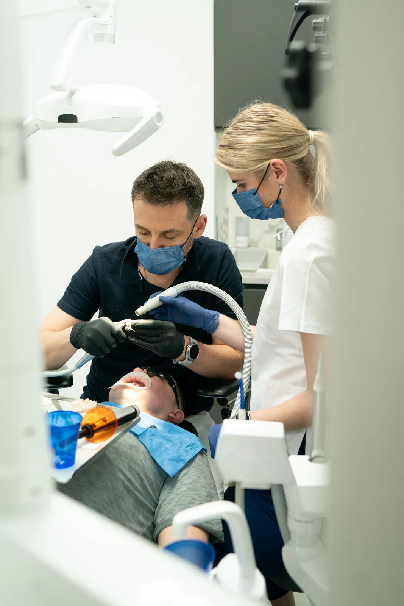
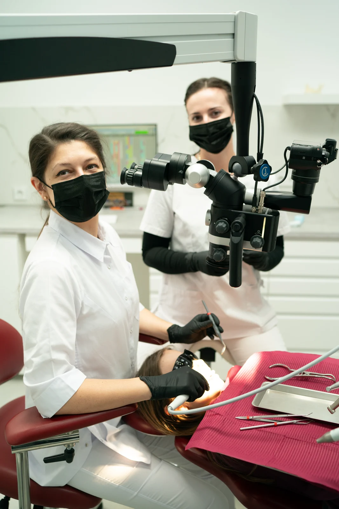
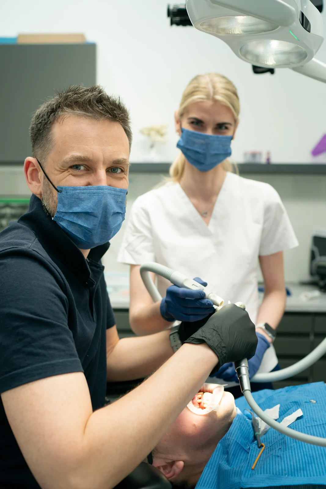
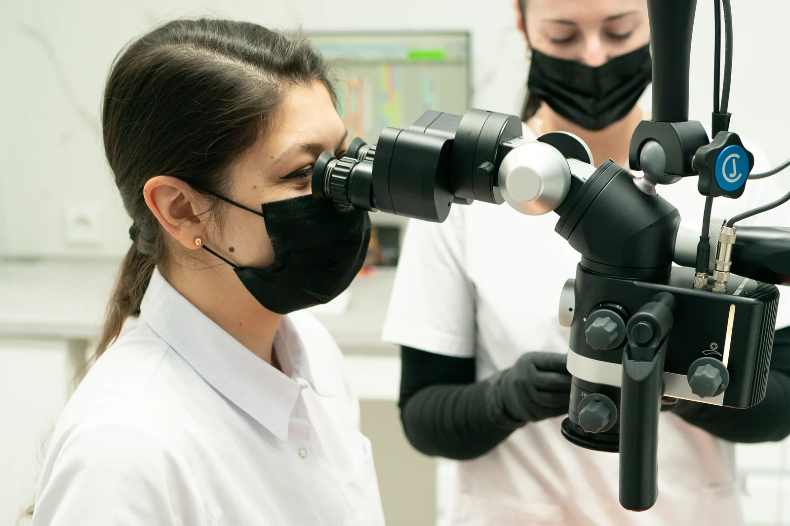
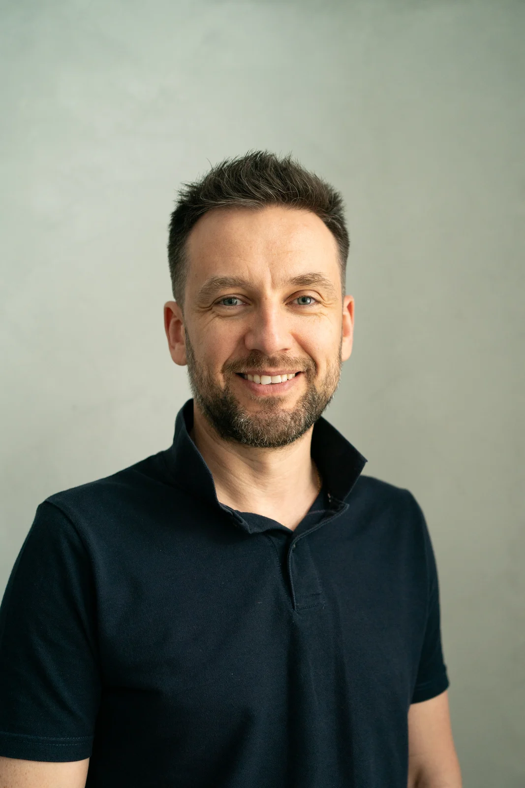
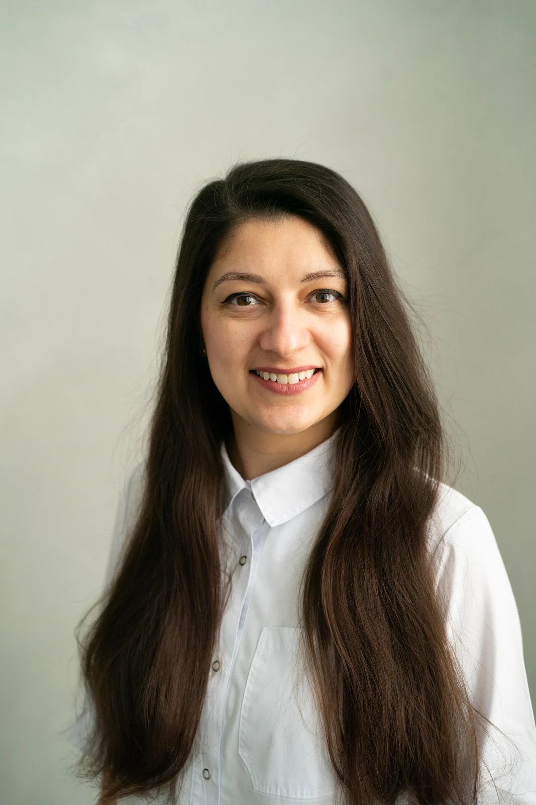

Brand photography · Dental clinic, Brno
The faces behind the mask
Team portraits and photos of real treatment for Supreme Dental, a dental clinic in Brno that works under the microscope. The aim: let new patients meet the people who will look after them, before they sit in the chair.

The client
Your smile in expert hands

Supreme Dental is a clinic in Brno, run by two dentists, Nazar and Ivanna Shcherbyna, with a close team of dentists and hygienists. Much of their work happens under a microscope.
They cover everything from hygiene and whitening to fillings, root canals, crowns, veneers and implants, and they also treat patients sent to them by other dentists.
Nobody looks forward to the dentist. The photos had to make the first visit feel a little less like a step into the unknown.
The idea
Masks on, masks off
In a surgery everyone wears a mask, and a mask hides the one thing a nervous patient looks for: a face. So I split the day in two. Masks on: real treatment, photographed quietly from the doorway as it happened. Masks off: calm portraits with nothing between the doctor and the patient.
And even behind a mask, a real smile shows in the eyes.



In the surgery
Precision under the microscope
The microscope is what sets the clinic apart, so it earned its own picture: the doctor at the eyepieces, the assistant one step ahead. Even the colours were already on brand: bright white rooms, black gloves and patient bibs in the deep raspberry of the clinic’s logo.

Portraits
Then the masks come off
A plain grey wall, soft window light and time to talk until the smiles were real. These are the portraits a new patient sees first, on the website or a booking profile, and they decide who gets the call.


What this shows
Trust starts before the first visit
One shoot gave the clinic two sets of photos that work together: real treatment that shows skill and care, and open portraits that show who is behind it. For someone choosing a new dentist, that can be the difference between scrolling on and booking.